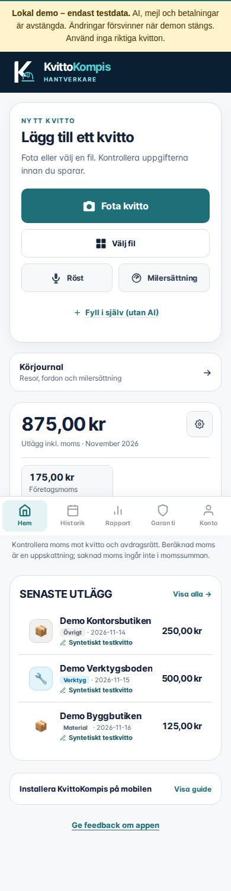
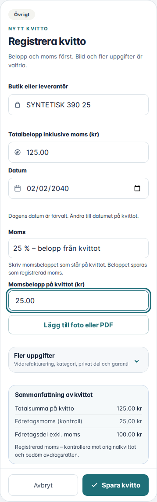
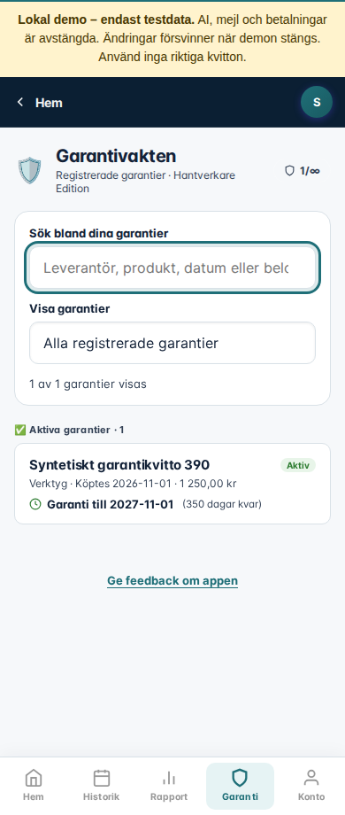

01
Lägg till kvittot
Ta ett foto, välj en fil eller skriv in uppgifterna själv.
KvittoKompis för hantverkare
Samla kvitton, håll koll på verktygens garantier och registrera dina körningar – på ett ställe, direkt i mobilen. Kontrollera alltid uppgifterna innan du sparar eller exporterar.
Skyddad testmiljö. Använd endast påhittade testuppgifter – inte riktiga kundkvitton.
Illustrativ produktvy – inte en skärmbild från den driftsatta appen.
För hantverkare som har viktigare saker att göra än administration
Så fungerar det
Det viktigaste ska vara enkelt: få in kvittot, kontrollera uppgifterna och hitta det när det behövs.
Ta ett foto, välj en fil eller skriv in uppgifterna själv.
Granska datum, belopp och moms. Okänd moms ska inte förväxlas med 0 %.
Samla kvitton och förbered rapporter som kan granskas tillsammans med redovisaren.
Byggd för verkliga arbetsdagar
Funktioner byggda kring inköp, verktyg och resor – med tydliga kontroller och utan krav på AI.
Fota, välj en fil eller registrera inköpet manuellt. Du granskar belopp och moms själv.
Samla uppgifter om verktyg och utrustning och håll koll på registrerade garantidatum.
Registrera tjänsteresor och få en samlad överblick över resor och underlag.
Kontrollera belopp och momssatser. Okänd moms ska inte förväxlas med verifierad 0 %.
Hitta tidigare kvitton när du behöver underlag eller vill kontrollera ett inköp.
PDF- och Excel-underlag testas vidare. En export betyder inte att kvittot är bokfört.
Inblick i utvecklingsversionen
Riktiga skärmbilder från automatiserade Chromium-tester med syntetiska uppgifter. Bilderna visar testvyer, inte en driftsatt eller färdig betaversion.



Skärmbilderna är utsnitt från automatiserade tester av en utvecklingsgren. Funktioner och utseende kan förändras före lansering.
Hantverkare först
KvittoKompis Hantverkare Edition utvecklas för små bygg-, el-, VVS- och serviceföretag som vill samla arbetsdagens underlag på ett ställe.
Begränsad utvecklingsversion · Inte öppet för riktiga kundkvitton ännu.
 Hantverkare Edition
Hantverkare EditionGratis och Premium
Ambitionen är att även gratisversionen ska kännas genomarbetad. Priser, exakta funktioner och abonnemangsvillkor fastställs före lansering.
Det viktiga först.
En pålitlig grund för att registrera och hålla ordning på kvitton utan krav på AI.
Slutligt innehåll och eventuella begränsningar är inte beslutade.
Mer när du behöver det.
Vi utreder ett betalalternativ med ytterligare hjälp i den dagliga administrationen.
Pris och funktioner publiceras innan någon betalning kan startas.
Inga abonnemang säljs från denna sida. Tjänsten är inte öppen för skarpa kundunderlag.
Direkt i mobilen
Hantverkare utvecklas som en webbapp (PWA). När installation stöds av din webbläsare kan du lägga appen på hemskärmen – utan en APK-fil eller separat appbutik.
Vanliga frågor
Vad fungerar i testversionen, och vad behöver du kontrollera?
Inte för riktiga kundkvitton än. KvittoKompis utvecklas och testas fortfarande. Den skyddade testappen är endast avsedd för syntetiska uppgifter.
Nej. Du ska kunna registrera kvitton manuellt och själv kontrollera informationen. Valfri AI-hjälp är inte en förutsättning för grundflödet.
Nej, ett system bör inte lova det. Momssats och underlag måste kunna kontrolleras. Okänd moms ska inte presenteras som verifierad nollmoms.
Garantivakten samlar registrerade garantidatum och uppgifter om verktyg och utrustning. Kontrollera alltid köpevillkor och garantibevis. Funktionen testas fortfarande.
Körjournalen har stöd för registrering och underlag. Kontrollera uppgifterna och aktuella ersättningsregler innan de används i företagets redovisning.
Nej. Testmiljön är skyddad och åtkomsten kan vara begränsad. Den är inte en öppen betalansering. Använd endast påhittade testuppgifter.
Vi planerar en gratisversion och ett Premium-alternativ, men har ännu inte fastställt priser eller slutligt innehåll.
PDF- och Excel-underlag finns i utvecklingsarbetet och genomgår fortfarande testning. Export är ett granskningsunderlag och ersätter inte kontroll eller bokföringsansvar.
Vi bygger vidare
Utforska utvecklingsversionen av KvittoKompis Hantverkare Edition.